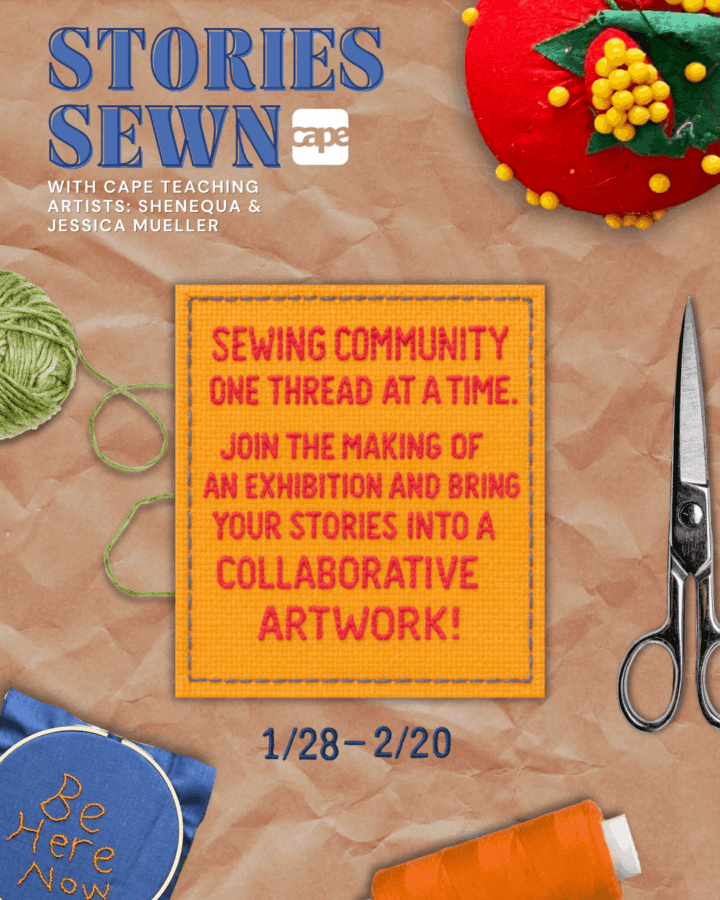

Stories Sewn
We invite you to join Stories Sewn, an innovative, collaborative exhibition led by teaching artists Jessica Mueller and SHENEQUA that transforms the CAPE gallery into an interactive sewing and textile workshop.
This evolving exhibition blurs the line between artist and audience, inviting the public to actively participate in the creation of the artwork itself. Through shared making, discussion, and hands-on learning, the gallery will gradually fill with textile works shaped by many voices, skill levels, and stories.
Throughout the exhibition, participants will take part in guided fabric workshops featuring three creative stations: writing, embroidery, and sewing. In each workshop, participants will create two plush vessels. One vessel will become part of the evolving exhibition, while the other will be yours to take home.
Each vessel will hold a hidden message: a hand-stitched secret, story, prayer, or wish. As the workshops continue, these soft sculptures will accumulate in the gallery, transforming the space into a shared landscape of collective hopes and narratives.
No prior experience is necessary, and all materials are provided. Whether you are new to textiles or an experienced maker, your contribution helps shape this living exhibition.
Workshop Dates:
Workshop 1: Friday, January 30th, 1:30-4:30p*
Workshop 2: Tuesday, February 3rd, 5-8p